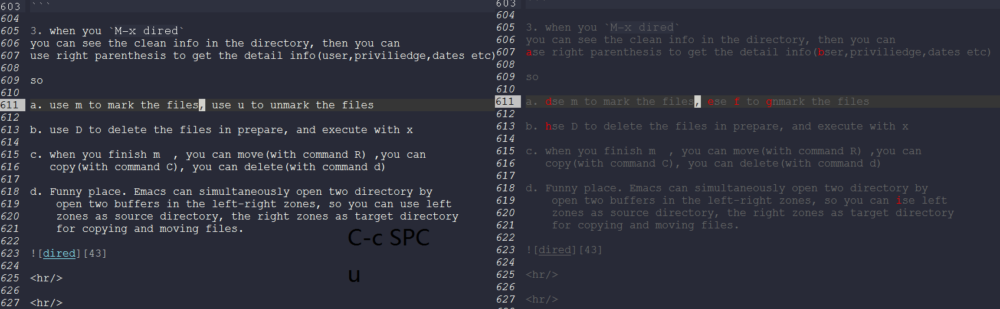

Created: 2017-10-08 周日 22:04
Choosing Themes You can choose from several built in presentations, including default, beige, sky, night (my favorite), serif, simple, moon
You can also make your own theme by creating a new CSS file and defining styles to for that theme.
Define which theme you want using the code:
There are several built in styles of transition effects to move from one slide to another. I find linear the most pleasing, as it simply slides the content in from the right or bottom to. Cube is quite a nice rotating cube in the middle of the screen, so you may not get the full benefit of a wide screen display. Zoom is a bit to much for my delicate eyes.
The available tranistions include: default, cube, page, concave, zoom, linear, fade, none
Define a transition before any of the slide content (before the first heading) using the code:
**This slide is interesting because I am a geek :)
https://emacs.stackexchange.com/questions/32795/org-presentation-using-transitions-revealing-items http://www.google.com

:reveal_background: #FF0000
:reveal_background: ../customizations/img/new.jpg :reveal_background_trans: slide
Available fragment styles are:
grow shrink roll-in fade-out highlight-red highlight-green highlight-blue appear
Setting :frag t will use Reveal.js default fragment style, which can be overridden by local option #+REVEAL_DEFAULT_FRAG_STYLE or global variable org-reveal-default-frag-style.
Fragment sequence can be changed by assigning adding :frag_idx property to each fragmented element. And, this paragraph shows at last. This paragraph shows secondly. This paragraph shows at first.
All items grow. As a whole.
To define fragment styles for every list item, please enumerate each item’s style in a lisp list.
none in the style list will disable fragment for the corresponding list item.
Custom fragment sequence should also be enumerated for each list item.